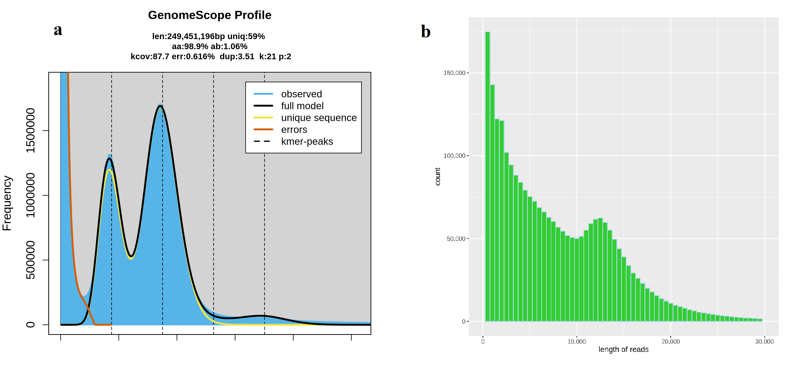
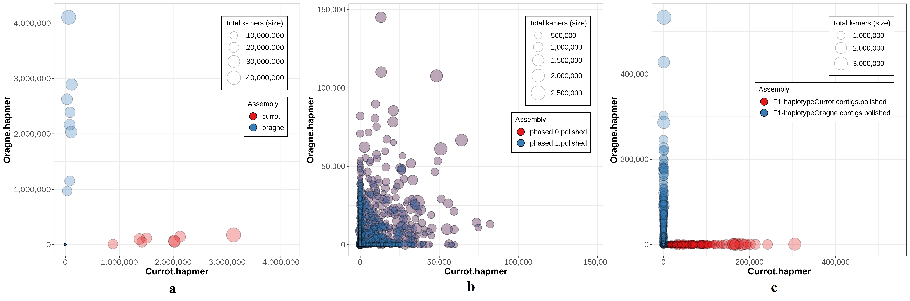
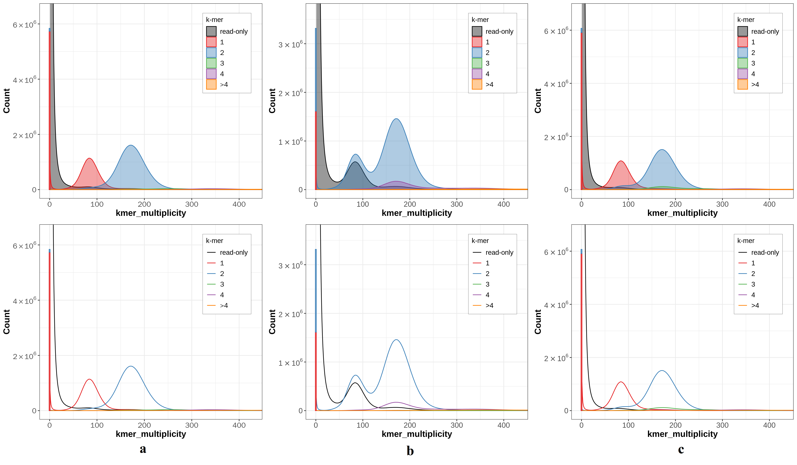
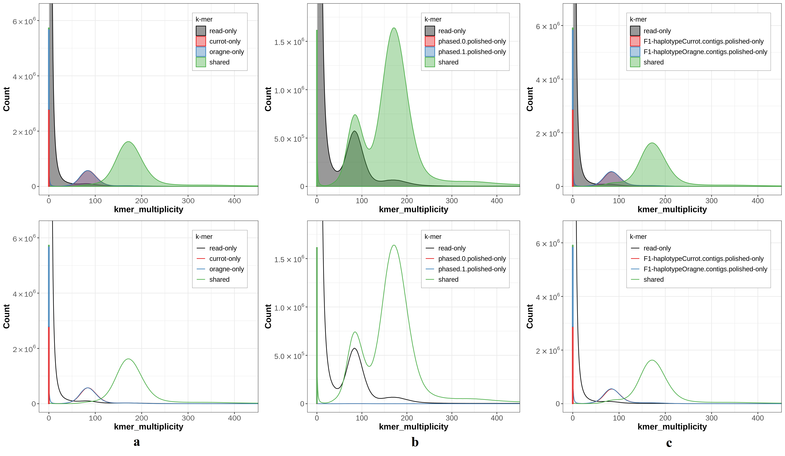
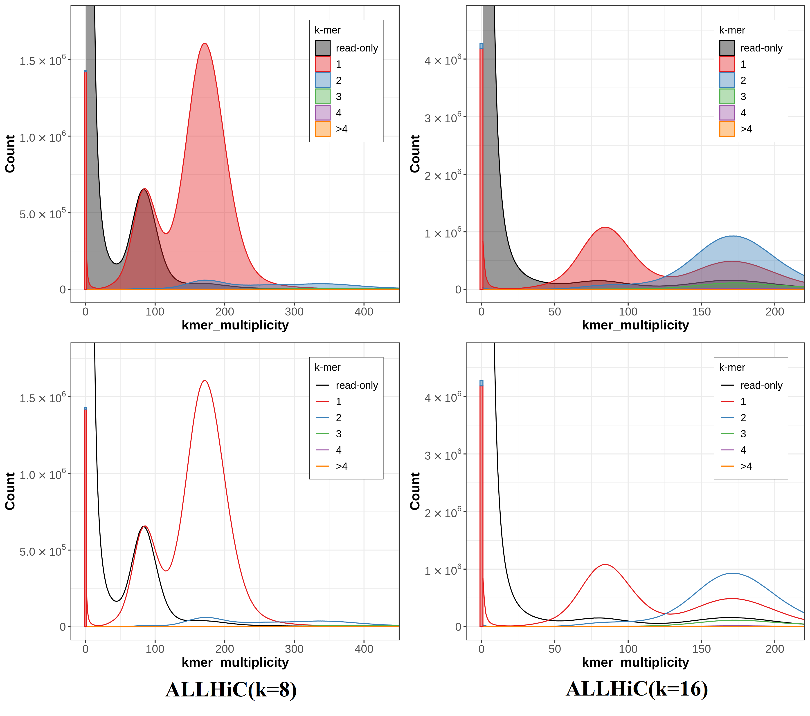
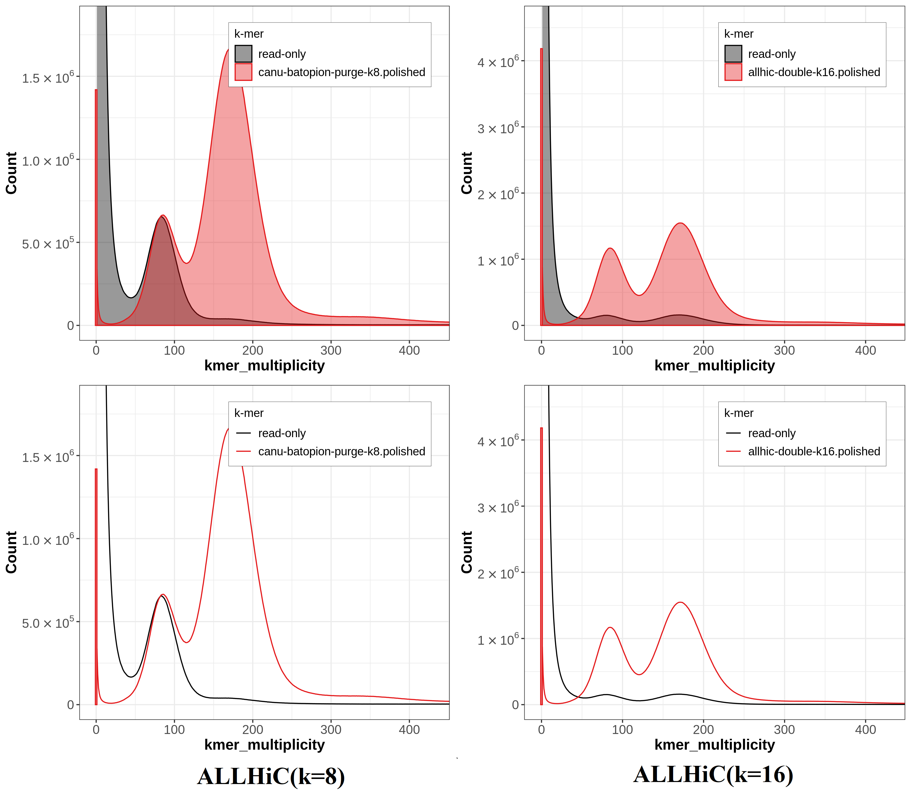
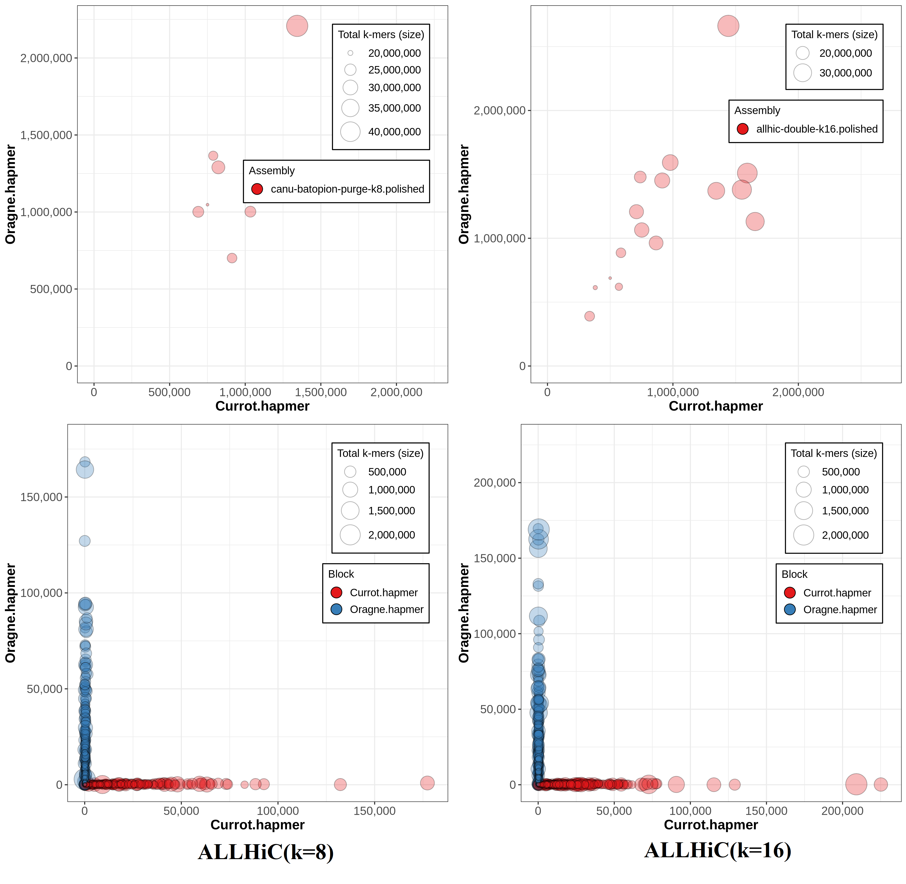
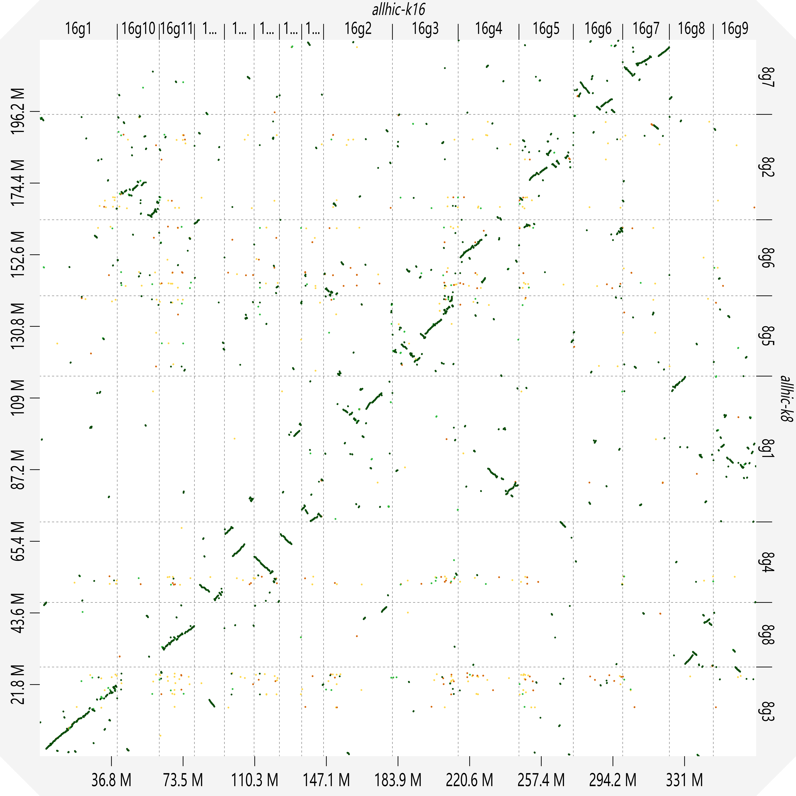

几种单倍型基因组组装方法的比较
摘要
二倍体个体具有两套遗传信息，一套来自父本，一套来自母本。在大多数二倍体基因组组装中，来自同源染色体的两个同源拷贝被折叠在一起，最终得到一个马赛克(mosaic)序列，也被称为伪单倍型(pseudo-haplotypes)，即一套基因组表示两个单倍型信息，缺失了近50%的等位变异信息。单倍型基因组信息对于研究基因组如何影响表型差异至关重要。常规二倍体基因组组装缺失的单倍型信息将会影响后续基因注释的准确性，忽略了两个同源染色体之间的差异。本研究介绍了Gamete binning、FALCON-Phase、Trio binning和ALLHiC 4种用于单倍型基因组组装的方法，旨在获得二倍体两个完整的单倍型基因组，并从连续性、完整性、交换错误率等方面评估其单倍型组装质量。分析整理4种组装方法获得不同水平的单倍型基因组，根据不同的测序数据选择合适的单倍型组装方法，比较得出更适合单倍型基因组组装的组装方法，发现Gamete binning的整体效果最佳，可以获得染色体水平的单倍型解析基因组，N50达到了25Mbp。 ALLHiC虽然可以得到染色体水平的组装，但对于二倍体基因组只获得了单倍型混合基因组，并没有将两个单倍型完全解析出来。而FALCON-Phase和Trio binning虽然获得了两个单倍型，但两者组装序列连续性较低，N50均没有达到兆(Mb)级。整理4种组装方法的优缺点，尝试寻找一种适合单倍型基因组组装的组装方法，为后续的基因注释等下游分析提供保障。得到两个完整的单倍型基因组序列，有助于了解单倍型之间的等位基因差异影响个体表型差异的机制。
关键字：二倍体；单倍型基因组组装；方法评估；等位变异；染色体水平组装；伪单倍型
1 前言
1.1 项目背景
单倍型(Haplotype)是指共存于单条染色体上的一系列遗传变异位点的组合（李双双等 2018），是一组来自相同亲本的等位序列组合，描述的是一段单条染色体上的序列差异。单倍型基因组组装旨在获得单倍型解析(haplotype-resolved)的组装序列，即从二倍体物种获得两个完整的单倍型基因组序列；单倍型基因组之间存在的序列差异可能导致某些表型或性状发生改变，如等位基因表达差异、等位基因甲基化差异等。
大多数二倍体基因组组装工具只是简单的将读段(reads)组装到重叠群(contigs)水平，忽略了同源染色体之间的差异，得到的组装序列被称为伪单倍型(pseudo-haplotypes)序列，其中混合了两个单倍型的序列。这种单倍型混合的组装可能影响下游分析(Al Bkhetan et al 2021)，从而导致错误的生物学解释。二倍体基因组的两组同源染色体，一组来自父本，另一组来自母本；彼此之间存在复杂的等位基因变异。得到两个完整的单倍型基因组序列，有助于了解单倍型之间的等位基因差异影响个体表型差异的机制，如最近在荔枝(Litchi chinensis Sonn)单倍型基因组中发现每个单倍型之间存在显著的覆盖差异，具有特定于极早熟和晚熟的不同模式(Edger 2022, Hu et al 2022)，这一研究证实了单倍型基因组之间的等位差异会影响荔枝的果实成熟期。完全相同的一组变体的不同配置可能会导致表型和疾病易感性的不同结果，这往往是通过将组装序列对齐人类参考基因组获得，所以精确的人类单倍型解析基因组对于了解基因组与个体表型之间的关系至关重要(Cao et al 2015)。
为了得到高精度的单倍型基因组序列，一方面可以从测序样本入手，另一方面则是开发新的组装算法，从杂合二倍体中尽可能的恢复其两个单倍体基因组序列。从测序样本入手，可以考虑近交、染色体分选(chromosome sorting)、Strand-seq。对目标物种进行近交，减少单倍型变异，获得纯合个体的基因组组装，但这限制于可育；况且，人为干预得到的纯合个体可能导致基因组不能代表自然种群中发现的变异(Koren et al 2018)。染色体分选(Yang et al 2011)是通过Phase-Seq(Chen et al 2017)技术分离同源染色体的两条姐妹染色单体，并分别进行测序组装，从而获得染色体层次的单倍型基因组，但这依赖于染色体分选时的荧光强度，并不能保证染色体的两条姐妹染色单体被正确分离。Strand-seq是一种单细胞测序技术，使用二代测序技术独立分析每条染色体的姐妹染色单体遗传模式(Falconer and Lansdorp 2013)；仅对DNA模板链进行测序，保留了单个同源物的结构连续性(Kronenberg et al 2021)，但是其数据的生成难度限制了其广泛应用。
FALCON-Unzip无法完整的输出单倍型序列，只能进行部分定相，从主要重叠群(primary contigs)中识别杂合变异，并根据杂合位置之间的相位信息输出一个单倍型参考基因组序列和单倍型特异性重叠群(haplotigs)(Chin et al 2016)。FALCON-Unzip输出的单倍型参考基因组序列混合了两个单倍型的序列，可能会影响下游的基因注释准确性；输出的单倍型特异性重叠群也只是杂合区域的局部单倍型信息。FALCON-Phase作为FALCON-Unzip的扩展，利用Hi-C测序数据的超远程连接信息将相位块（phase block）连接，从而生成更长的单倍型序列，但并不能定相整个染色体。
DipAsm可以利用PacBio HiFi
本文比较了4种单倍型基因组组装方法（除ALLHiC）产生的二倍体两组单倍型基因组序列。准确的单倍型基因组信息为研究同源染色体等位差异提供了可能性。
1.2 Trio binning方法概述
Trio binning(Koren et al
2018)在组装之前，利用亲本基因组之间的基因组差异将子代全基因组测序读段分离成单倍型特异性读段集，并分别进行基因组组装，从而获得目标个体的两个单倍型基因组。二倍体个体分别从两个亲本各继承一个重组单倍型。二倍体基因组存在的复杂等位基因变异阻碍了其单倍型基因组序列的组装，而Trio
binning在组装前解决等位基因变异来简化单倍型组装，即在组装前识别来自父母Illumina短读段测序数据的特异性k-mers，将子代PacBio
CLR
1.3 ALLHiC方法概述
ALLHiC(Zhang et al 2019)是专为多倍体构建单倍型、染色体级别组装设计的一种新算法；该算法能够使用Hi-C配对末端读段和创新的修剪(prune)和优化(optimize)步骤构建多倍体基因组的等位基因感知、染色体规模的单倍型基因组组装(Zhang et al 2019)。ALLHiC能够实现同源多倍体基因组的染色体水平的从头组装，分离每个等位基因，同时也适用于异源多倍体和杂合二倍体基因组的单倍型染色体水平组装。ALLHiC算法包括五个步骤：修剪(pruning)，分区(partition)，修复(rescue)，优化(optimization)和构建(building)(Zhang et al 2019)。修剪步骤提供等位基因感知的组装技术；分区步骤使用聚类算法将重叠群(contigs)划分为与染色体条数相对应数量（用户定义的k值）的组；修复步骤是一个检查的过程，搜索最佳Hi-C信号，在初始修剪步骤中由于缺乏有效信号而未处理的重叠群被进一步划分到特定组中；优化步骤使用遗传算法对每个组内的重叠群进行排序和定向；最终从重叠群中构建染色体水平或支架(scaffold)水平组装。
1.4 Gamete binning方法概述
Gamete binning(Campoy et al 2020)是一种基于单倍体配子的单细胞测序方法，能够将全基因组测序读段分离成单倍型特异性读段集；在组装每个单倍型的读段后，使用源自配子的遗传图谱将contigs构建到染色体水平。Gamete binning首先从目标个体中分离配子核，对数百个单倍体配子基因组进行高通量单细胞测序；配子基因组中序列变异的分离能够直接将所有变体定相为两个单倍型，并给予配子基因组中的重组模式构建基因图谱。基于遗传连锁群利用此外定相好的等位变异分离子代PacBio CLR长读段为两个不同的读段组（每组代表一个单倍型），而后对每个单倍型进行独立组装，并使用配子衍生的遗传图谱将每个单倍型支架(scaffolding)到染色体水平(Campoy et al 2020)。
1.5 FALCON-Phase方法概述
FALCON-Phase(Kronenberg et al 2021)是一个定相(phasing)工具，使用超远程Hi-C染色质作用数据将部分定相(partially phased)二倍体组装的相位块(phase block)扩展到染色体或支架(scaffold)水平。PacBio CLR长读段测序组装一般得到的是主要重叠群（同时代表两个单倍型信息）和较短的交替单倍体(haplotigs)。FALCON-Phase输入一个部分定相的长读段重叠群水平的组装(primary contigs)，并使用来自同一样本的Hi-C测序数据扩展重叠群的定相。这里引入一个新的概念--相位块(phase block)，通过将交替的单倍体与其相关的主要重叠群对齐来定义。通过相位块的对齐区分主要重叠群的定相区域与非定相区域，然后使用Hi-C测序数据对沿着每个重叠群处于相同相位（相同亲本同源物）的单倍型块进行分类，最后通过将折叠的序列整合到两个单倍型中来扩展组装单倍型序列，以获得两组重叠群集。FALCON-Phase的分型效果取决于目标个体的杂合度和提供的主要重叠群准确度，杂合度越高，分型效果越佳。
1.6 研究目的
分别利用Trio binning、ALLHiC、Gamete binning、FALCON-Phase 4种组装方法获得杏(Prunus armeniaca)的单倍型基因组序列，并从连续性、完整性、准确性等方面评估4种组装方法的单倍型组装质量。根据不同的测序数据选择合适的单倍型基因组组装方法，获得两个完整的单倍型基因组序列。整理4种组装方法的优缺点，尝试寻找一种适合单倍型基因组组装的组装方法，为后续的基因注释等下游分析提供保障。
2 材料与方法
2.1 原始测序数据统计
根据4种组装方法所需测序数据的要求，我们采用Prunus armeniaca（杏，栽培品种：“Rojo Pasión”）作为评估组装效果的物种，所有的原始测序数据均可从ENA数据库中获得，登录号为“PRJEB37669”，其中Currot和OrangeRed为目标个体的两个亲本。对原始测序数据进行了初步统计（表1），包含两个亲本高于60x的Illumina双端测序，这将用于Trio binning分型以及后期验证各种方法分型质量；目标个体F1接近80x的PacBio CLR长读段测序(19.9 Gbp)、Hi-C(57.6 Gbp)以及花粉10x-Genomics单细胞测序数据(61.7 Gbp)。
表1 原始测序数据统计
Table 1 The statistics of raw sequencing
data
2.2 基于Kmer的基因组特征分析
在进行基因组组装之前，了解基因组的基本特征有助于我们后续组装参数的调整。GenomeScope v2.0可以在没有参考基因组的情况下，分析原始测序读段的k-mer频率以估计目标基因组的主要特征，如基因组大小、杂合度和重复率(Ranallo-Benavidez et al 2020)。首先，利用Jellyfish v2.2.10(Marçais and Kingsford 2011)工具以kmer=21统计来自10x-Genomics Illumina短读段测序数据k-mers的出现频率，并将其输入到GenomeScope v2.0程序，参数设置为“--max_kmercov=1000000”（过滤高频出现的 k-mers）；这将会过滤在测序数据中出现次数超过1000000次的k-mers，从而避免人为引入的碱基错误。从k-mers频率分布图，我们得知预测的单倍型基因组大小约为250 Mbp，杂合率为1.06%，重复率为41%（图1 a）。在coverage=1的位置出现大量唯一k-mer（红色线）可能是PCR错误导致。

图1 k-mers频率分布图与PacBio长读段长度分布
Fig. 1 Frequency
distribution of k-mers and PacBio long read length distribution
a)
为K-mers
频率分布图，x轴表示k-mer出现次数，y轴则指示出现x次的k-mer数量。从左至右依次为杂合峰、纯合峰、重复峰。其中len为预测的单倍型基因组大小；uniq表示基因组中非重复序列比例；aa为纯合率；ab为杂合率。b)
PacBio CLR测序读段(19.9 Gbp)的长度分布。
2.3 二倍体基因组初步组装
对F1的19.9 Gbp原始PacBio CLR测序数据(图1 b)，使用Canu(Koren et al 2017) v2.2构建初步的二倍体组装。参数设置为“‘batOptions=-dg 3 -db 3 -dr 1 -ca 500 -cp 50’ genomeSize=250m corOutCoverage=200”，其中参数‘batOptions=-dg 3 -db 3 -dr 1 -ca 500 -cp 50’是针对多倍体基因组设计的优化参数，尽可能的组装杂合基因组序列，但这也适用于杂合度高的杂合二倍体组装。Genomescope2预测F1基因组杂合率为1.06%，这说明其基因组组装有一定困难。最终，得到约为389 Mbp的基因组（二倍体基因组的单倍型混合表示），是预测单倍型基因组大小(250 Mbp)的1.56倍，其中含有将近52.4%的重复序列。
基因组的某些部分可能具有非常高的杂合性，导致该部分两种单倍型的重叠群被组装为单独的主要重叠群(primary contigs)，而不是作为重叠群或相关的单倍体。Canu获得的基因组是二倍体的单倍型融合表示(Roach et al 2018)(haplotype-fused representation)，即代表两组等位基因序列。其算法会将高度杂合的区域组装成单独的重叠群（对于二倍体来讲，可以得到两条染色单体），而不是预期的单个单倍型融合的重叠群，从而导致基因组大小显著大于单倍型基因组的实际大小。Purge haplotigs程序可以为单倍型组装生成去冗余的单倍型融合重叠群(Roach et al 2018)。最终389 Mbp的基因组去除166 Mbp单倍型特异性重叠群(haplotigs)，得到约219 Mbp的单倍型融合组装（其中丢失了约3.4 Mbp可能存在的错误），与Genomescope2预测的单倍型基因组大小相差不大。
2.4 基于Trio binning方法获得单倍型组装序列
首先使用Meryl对亲本近60x的未组装短读段测序数据进行k-mers(kmer=19)统计以获得k-mers频率分布，并去除可能存在的错误k-mers（低拷贝）和重复序列（高拷贝），只留下来自特异性纯合或杂合基因组序列的k-mers(Koren et al 2018)。接着，对F1代PacBio CLR测序数据中的每一条长读段进行k-mers统计，并与亲本特异性k-mers数据库进行比对，将长读段分给具有最匹配的单倍型特异性k-mer的单倍型读段集。最后分别利用Canu v2.2组装工具对两个单倍型进行组装，从而得到两个重叠群(contigs)水平的单倍型分辨的单倍型基因组。
2.5 基于ALLHiC方法获得染色体水平的单倍型基因组序列
将Canu得到的单倍型融合基因组和Hi-C数据输入ALLHiC程序，参数设置为“-k 16 -e GATC”，最终获得一个含有16条染色体以及未识别的scaffolds的fasta文件(groups.asm.fasta)。对于简单二倍体，Zhang等人(Zhang et al 2019)提供了一个流程脚本(https://github.com/tangerzhang/ALLHiC/blob/master/bin/ALLHiC_pip.sh)可直接对基因组进行支架(scaffolding)。为了验证ALLHiC管道是否能够分离同源染色体，以参数“-k 8 -e GATC”运行ALLHiC管道，对Purge haplotigs处理的主要重叠群进行支架(scaffolding)，获得8条染色体的基因组序列。
2.6 基于Gamete binning方法获得染色体水平的单倍型组装序列
两个完整的单倍型基因组可从ENA数据库中获得，组装ID(Assembly ID)分别是GCA_903112645(Currot haplotype)和GCA_903114435(OrangeRed haplotype)。
2.7 使用FALCON-Phase工具获得两个全长伪单倍型序列
FALCON-Phase程序需要输入主要重叠群(primary contigs)和单倍型特异性重叠群(haplotigs)。FALCON从PacBio CLR长读段组装得到主要重叠群(p_contigs)和次级重叠群(a_contigs)；接着FALCON-Unzip算法利用主要重叠群中的杂合信息进行单倍型定相，最终生成一组更新的主要重叠群和单倍型特异性重叠群(Chin et al 2016)（可利用长读段测序数据进行自身校正）。单倍型特异性重叠群比FALCON生成的次级重叠群体现更连续的单倍型特异性序列信息。最终得到237,925,913 bp(N50: 364,944 bp)的主要重叠群和117,123,257 bp(N50: 74,370 bp)的单倍型特异性重叠群，并将两者输入FALCON-Phase程序，FALCON-Phase识别Hi-C测序数据中的超远程链接信息对基因组进行进一步分型，最终得到两个重叠群(contigs)水平的全长伪单倍型(pseudo-haplotypes)。
2.8 组装错误纠正
Pilon是一款集成基因组组装改进和变异检测的软件，通过将基因组组装与原始Illumina测序数据进行比对，可以检测并校正单碱基差异(single base differences)、插入缺失(indels)、局部组装错误(local misassemblies)、填充间隙(gap filling)等(Walker et al 2014)。利用bowtie2 v2.4.5以默认参数构建每个单倍型组装与子代10x Genomics测序数据的对齐Bam文件，并通过samtools v1.13进行排序，以及构建索引，最后以参数“--fix bases –mindepth 0.85”运行pilon v1.24。
2.9 组装质量评估-组装连续性
N50是评估基因组连续性的重要指标。首先需要将组装中所有序列按照长度从长到短依次排列，并按照该顺序将序列长度依次相加，当相加的长度达到序列总长度的50%时，最后一条序列的长度便是N50。N90是当相加的长度达到序列总长度的90%时，最后一条序列的长度。N50，N90值越大，则表明组装连续性越高。
2.10 组装质量评估-组装完整性
基于OrthoDB v10 的有胚植物单拷贝同源物数据库(embryophyta_odb10)，对每个单倍型基因组进行BUSCO v3.0.2评估，可以显示基因组的完整率(C)、重复率(D)、缺失率(M)等指标。
2.11 单倍型组装质量评估
Merqury可以在没有参考基因组的情况下，基于k-mers频率分布对组装进行完整性和质量评估；更重要的是其可以对单倍型分辨的两个单倍型基因组进行单倍型组装质量评估。首先，利用Meryl统计两个亲本（Currot和OrangeRed）Illumina测序数据和子代10x Genomics数据的k-mers频率分布。
在Merqury中，hap-mers被定义为亲本遗传的单倍型特异性k-mers，代表着子代从亲本中继承的k-mers，仅在单个单倍型中出现一次或多次，用集合的思想表示为亲本各自特异的k-mers与子代k-mers的交集。Hap-mers用于确定Merqury中定义的相位块(phase block)，相位块被定义为源自相同单倍型的一组一致性的标记(Rhie et al 2020)。Merqury最终可以输出拷贝数谱图(spectra-cn plot)、组装谱图(spectra-asm plot)、评估单倍型组装质量的圆圈图(hap-mers blob plot)(Rhie et al 2020)。
杂合二倍体的拷贝数谱主要由两个峰组装，一个代表在二倍体基因组为1个拷贝(1-copy)的k-mers（杂合，在单个单倍型上出现）；另一个在基因组中代表2个拷贝(2-copy)的k-mers（纯合，在两个单倍型上或在一个单倍型中出现两次）(Rhie et al 2020)。最终生成一组多重性直方图，并以拷贝数着色。
组装谱与拷贝数谱类似，通过k-mers在不同的单倍型来着色，主要显示两个单倍型中的k-mers分布。可以检测到只存在于一个单倍型组装中的k-mers、在两个单倍型组装中同时存在的k-mers(shared)、仅在原始测序数据中发现的k-mers(Rhie et al 2020)。其次，组装谱可以指示k-mers的完整性，从而评估两个单倍型组装的完整性（如果其中出现了黑色峰，则说明单倍型组装不完整，只有部分单倍型被识别，剩下的仅在原始测序数据中被发现）。圆圈图(blob plot)可以直观地显示两个单倍型的分型效果，通过单倍型类别着色图中的圆圈，圆圈的位置将指示单倍型基因组组装的好坏（圆圈越靠近坐标轴，定相效果越好）。
3 结果与分析
Gamete binning、Trio
binning、FALCON-Phase都得到了不同程度的单倍型分辨的单倍型基因组序列。Gamete
binning的单倍型组装序列是从ENA数据库获得，已被校正；而Trio
binning、FALCON-Phase得到的两个单倍型基因组均通过Pilon
v1.24进行校正，纠正错误组装。Pilon可以从原始测序数据中恢复组装中缺失的基因或修正组装错误，尤其是在Trio
binning中表现突出。根据单拷贝基因完整性评估(BUSCO)，Trio
binning得到的两个单倍型在pilon校正之前均存在约6.0%的缺失，检测到的单拷贝基因占比仅有87.0%；经pilon校正之后，缺失率降低至2.6%以下，单拷贝基因占比也达到了91.7%以上（表3），说明Pilon从原始测序数据中有效的恢复了由组装错误导致的缺失。ALLHiC方法并没有得到两个单倍型分辨的基因组，但是我们通过不同的k值获得两个单倍型混合基因组（k=8和k=16），ALLHiC提供的二倍体模型(ALLHiC_pip.sh
本文主要从基因组连续性(N50)、基因组组装完整性(BSUCO)、单倍型组装质量(Merqury)等方面评估Gamete binning、Trio binning、FALCON-Phase、ALLHiC 4种单倍型组装方法对二倍体物种杏(Prunus armeniaca)的单倍型基因组组装质量。
表2 每个单倍型基因组组装统计
Table 2 Genome assembly statistics
per haplotype
| 方法 | 单倍型 | 序列/条 | N50/bp | N90/bp | 总碱基数/bp |
| Gamete binning | Currot | 93 | 25,835,044 | 20,833,752 | 215,952,222 |
| OrangeRed | 104 | 25,508,227 | 20,530,804 | 215,239,966 | |
| FALCON-Phase | phased.0 | 1,321 | 362,109 | 75,530 | 238,169,392 |
| phased.1 | 1,321 | 362,109 | 75,530 | 238,042,337 | |
| Trio binning | F1-haplotypeCurrot | 1,648 | 484,325 | 49,148 | 237,732,501 |
| F1-haplotypeOrangeRed | 1,664 | 489,043 | 46,145 | 236,509,352 | |
| ALLHiC | k=8 | 8 | 24,510,357 | 22,706,253 | 218,080,681 |
| k=16 | 16 | 25,351,798 | 15,217,824 | 367,847,792 |
3.1 评估基因组组装连续性
N50是评估基因组组装连续性的重要指标。N50越大，表示组装连续性越高。此外，对组装的基因组大小、序列条数进行统计（表2）。每种方法（除ALLHiC）获得的两个单倍型之间差距不大，说明获得的两个单倍型基因组组装在连续性上有一定的相似性。获得的单倍型基因组大小在210 Mbp-240 Mbp之间，符合GenomeScope2预测的250 Mbp（图1 a）单倍型基因组大小的预期（误差在可接受范围之内）。染色体水平的单倍型基因组N50都在20 Mbp以上，而FALCON-Phase与Trio binning获得的单倍型组装N50均在500 kbp以下。从连续性上来看，效果最佳的是Gamete binning方法。如果对FALCON-Phase和Trio binning的单倍型基因组组装进行Scaffolding，可以一定程度上改善组装的连续性，但也有可能引入未知的错误。ALLHiC(k=8)是在去除单倍型特异性重叠群(haplotigs)之后运行的结果，整体的基因组大小也在正常范围之内；理想状态下，ALLHiC(k=16)基因组中含有目标个体的两套遗传信息，即基因组大小应该是单倍型基因组的两倍，但是k=16得到的基因组大小只有单倍型基因组的1.69倍，说明二倍体基因组约30%的等位变异没有被分离。在完全分离等位变异的情况下，ALLHiC(k=16)可以通过与参考基因组进行点阵图分析分离同源染色体（图S4），但是本文得到的k=16基因组并没有这个特征。
3.2 评估基因组组装完整性
使用OrthoDB(Zdobnov et al 2021)的单拷贝直系同源物数据库，BUSCO可以基于预期基因含量提供具有生物学意义的指标来估计基因组的完整性和冗余性(Manni et al 2021)。杏属于有胚植物，选择有胚植物直系同源数据库(embryophyta_odb10)，其中共有1614个保守的单拷贝基因。4种单倍型基因组组装方法得到的基因组完整性(C)均在93.2%以上，且缺失率(M)在5.9%以下（表3），说明各种方法基本恢复了单倍型基因组中的单拷贝基因。FALCON-Phase与ALLHiC(k=16)的单倍型基因组组装存在9.0%以上的重复(D)（表3）。尽管ALLHiC并没有分离二倍体的单倍型基因组序列，但其组装的基因组序列完整性较高；将k值设置为二倍体染色体条数(k=8)，则可以获得Scaffolding之后的基因组Scaffold水平的组装。可以进一步提升组装序列的连续性。
表3 单倍型基因组的BUSCO评估（经pilon校正）
Table 3 BUSCO
assessment of haplotype genomes (pilon-corrected)
| 方法 | 单倍型 | 完整率 (C)/% | 单拷贝率 (S)/% | 重复率 (D)/% | 缺失率 (M)/% |
|---|---|---|---|---|---|
| Gamete binning | Currot | 97.9 | 96.1 | 1.8 | 1.4 |
| OrangeRed | 97.6 | 95.3 | 2.3 | 1.3 | |
| FALCON-Phase | phased.0 | 96.7 | 87.6 | 9.1 | 2.2 |
| phased.1 | 96.7 | 87.7 | 9.0 | 2.2 | |
| Trio binning | F1-haplotypeCurrot | 97.1 | 92.6 | 4.5 | 1.8 |
| F1-haplotypeOrangeRed | 96.3 | 91.7 | 4.6 | 2.6 | |
| ALLHiC | k=8 | 97.9 | 94.7 | 3.2 | 1.1 |
| k=16 | 93.2 | 82.2 | 11.0 | 5.9 |
3.3 评估单倍型基因组组装的准确性
利用两个亲本Illumina全基因组测序数据来验证单倍型基因组的准确性。Merqury提出基于hap-mers评估单倍型的准确性，相较于只考虑亲本特异性k-mers更加严格。亲本遗传的单倍型特异性k-mers(hap-mers)是子代从亲本中继承而来的k-mers，仅在一个单倍型中出现一次或多次，可作为评估单倍型准确性的指标。经统计，来自亲本Currot和OrangeRed的亲本遗传的单倍型特异性k-mer数量分别为15,033,008条和19,212,772条。
Gamete binning方法得到的两个单倍型基因组均在相应亲本基因组中找到92.70%以上的hap-mers。Trio binning方法生成的两个单倍型更是在95.85%以上（表4），表明大部分的单倍型序列都被正确分配给了单倍型。FALCON-Phase得到的两个单倍型的hap-mers在两个亲本中的占比相似，说明其单倍型为单倍型融合基因组，并没有将基因组中的单倍型序列分离开。ALLHiC(k=8)与FALCON-Phase类似，但其中只包含49.84%左右的hap-mers，说明ALLHiC(k=8)的单倍型混合基因组并不完整；而ALLHiC(k=16)虽然恢复了更多的单倍型信息，但仍是混合的单倍型基因组。
表4 各个单倍型中来自不同亲本hap-mers的统计
Table 4 Statistics of
hap-mers from different parents in each haplotype
Hap-mers圆圈图(hap-mers blob plot)可以直观的显示各条组装序列的单倍型来源，从而评估单倍型分型质量。从两个亲本中统计各自特异的hap-mers（表4），作为圆圈图的x轴和y轴，显示理想状态下的单倍型分布；圆圈颜色对应着不同的单倍型，大小为序列长度。理想状态下的圆圈图是两种颜色的圆圈（两个单倍型）无限接近于两轴（如Trio binning的圆圈图）。Gamete binning与Trio binning的分型效果最佳（图2），几乎将所有的单倍型序列正确分配给了每个单倍型。FALCON-Phase则是两个单倍型序列的混合（紫色圆圈，红色与蓝色的重合）。

图2 hap-mers圆圈图
Fig.2 Hap-mer blob plots
两轴分别是来自两个亲本Currot和OrangeRed原始测序数据的hap-mers计数；圆圈颜色表示不同的单倍型，大小表示序列长度。理想状态下，两种不同颜色的圆圈分别无限接近于两轴，不重叠。a)
Gamete binning方法两个单倍型的hap-mers圆圈图。b)
FALCON-Phase方法两个单倍型的hap-mers圆圈图。c) Trio
binning方法两个单倍型的hap-mers圆圈图。
3.4 评估单倍型基因组冗余性和杂合性
BUSCO通过检测组装中是否存在给定数据库中的单拷贝基因来评估组装的完整性。Merqury通过组装基因组和原始测序数据两者之间的k-mers计数进行统计比较，绘制k-mer拷贝数谱(k-mer copy number spectra)，从而指示拷贝数分布，可以在一定程度上显示组装基因组的冗余性和杂合性，以及缺失率(Mapleson et al 2017)。k-mer拷贝数谱，即k-mer拷贝数直方图。一般情况下，二倍体基因组的k-mer拷贝数谱会出现两个峰，根据k-mer在每个单倍型中出现的次数来决定拷贝数。第一个峰为单拷贝峰(1-copy)，表示只在其中一个单倍型中发现的k-mers，也被称为杂合峰；第二个峰为双拷贝峰(2-copy)，表示同时在两个单倍型中找到，也就是纯合峰。
由于ALLHiC方法并没有得到两个单倍型解析的基因组，故本节只对Gamete binning、FALCON-Phase和Trio binning三种方法得到的单倍型解析基因组绘制k-mer拷贝数谱（图3），图中不同的颜色表示不同的拷贝数。FALCON-Phase中出现了4拷贝(4-copy)峰（蓝色峰下的紫色峰），说明FALCON-Phase方法得到的单倍型中存在一定的错误重复，正如BUSCO统计其两个单倍型的重复率均在9.0%以上（表3）。Gamete binning与Trio binning方法运用的是相同的策略，都是在组装前将子代长读段测序数据分成两组不同的读段，再进行分别组装；从图3可看出两者的拷贝数差异不大。反观FALCON-Phase的两个单倍型存在大量缺失，图3显示组装中的单拷贝k-mers在原始测序数据中大量出现（黑色峰），说明FALCON-Phase只恢复了测序数据中的部分单倍型信息。此外，FALCON-Phase的两个单倍型中几乎没有单拷贝峰，说明组装得到的两个单倍型序列几乎都是纯合的（k-mer拷贝数谱中只有2拷贝峰），且两个单倍型的序列高度相似，所以我们猜测FALCON-Phase组装缺失的可能是单倍型的杂合序列（黑色峰）。K-mer拷贝数谱还显示各个单倍型组装中均存在不同程度的碱基错误，因为在单倍型组装中发现了在原始测序数据中不存在的k-mers（在0覆盖度下均存在红色竖线）。
图3 K-mer拷贝数谱图
Fig. 3 K-mer copy number spectrum plots
x轴表示k-mer出现的次数，y轴表示出现x次数的k-mers数量；不同的颜色表示不同的拷贝数，黑色表示在测序数据中统计的k-mer数量，在一定程度上显示单倍型组装的缺失。第一个峰（杂合）表示基因组中的1拷贝(1-copy)k-mers，仅在一个单倍型中发现的k-mers；第二个峰（纯合）代表来自纯合序列或单倍型特异性重复的2拷贝(2-copy)k-mers，即同时在两个单倍型中存在的k-mers。a)
Gamete binning方法两个单倍型的k-mer拷贝数谱。b)
FALCON-Phase方法两个单倍型的k-mer拷贝数谱。c) Trio
binning方法两个单倍型的k-mer拷贝数谱。
3.5 评估单倍型基因组组装的完整性
k-mer拷贝数谱图是从所有的拷贝数进行评估两个单倍型基因组的质量，k-mer组装谱图(spectra-asm)则是分别统计两个单倍型组装的拷贝数，并以单倍型类别进行着色（图4）。一个完美组装的二倍体基因组预计具有特异于代表杂合等位序列的每个单倍型k-mer平衡(Rhie et al 2020)。Gamete binning与Trio binning除了存在可能的碱基错误之外，几乎是完美的；其中1拷贝峰k-mers对每个单倍型组装都是特异的，2拷贝峰（绿色峰）则是两个单倍型组装共有的k-mers。这也验证了前面提到的高于92.70%的k-mer完整性（表4）。FALCON-Phase单倍型组装中并没有发现特异于单个单倍型的k-mers，所有统计的k-mers在两个单倍型中共享，且在1拷贝和2拷贝中都存在不同程度的缺失（黑色峰）。
图4 K-mer组装谱图
Fig. 4 K-mer assembly spectrum plots
从左至右，第一个峰是纯合峰，以单倍型着色；紫色（红色与蓝色重叠）峰是两个单倍型中特异性的k-mers，绿色则代表在两个单倍型中同时存在的k-mers。a)
Gamete binning方法两个单倍型的k-mer组装谱。b)
FALCON-Phase方法两个单倍型的k-mer组装谱。c) Trio
binning方法两个单倍型的k-mer组装谱。
3.6 统计单倍型基因组的交换错误
交换错误(switch error)是对等位变异定相到错误单倍型的统计，是评估基因分型质量的重要指标。在单倍型中检测到的来自其他单倍型的k-mers，被定义为交换错误。Merqury将存在交换错误的重叠群打断成相位块(phase block)，相位块被定义为至少具有两个来自相同单倍型特异性k-mers(hap-mers)的连续序列(Rhie et al 2020)。这里设置的阈值是每20 kbp允许存在100次交换，即允许0.5%的交换错误发生。此外，还对相位块进行统计N50、序列总长度等信息，方便定位交换错误在基因组中发生的位置。单倍型解析基因组组装的整个单倍型可以算做一个单独的块(block)(Rhie et al 2020)；理想状态下，在不存在交换错误时，统计的相位块N50与组装序列N50相同，并且相位块的总碱基数将与组装序列总碱基数持平。
4种方法得到的单倍型组装中只有Gamete binning、Trio binning和FALCON-Phase得到的是单倍型解析的基因组组装，三者相位块的总长度与其组装序列总长度相近，但是相位块的N50相差较大。经统计，Gamete binning的单倍型解析基因组交换错误率最低，在0.3515%以下。Trio binning也控制在0.5000%以下，但是FALCON-Phase的交换错误率超出了预先设置的阈值(0.5000%)，高达0.6161%，这也验证了FALCON-Phase的单倍型之间都混合了另一个单倍型的等位变异序列。而ALLHiC无论是k=8还是k=16，交换错误率均在1.6491%以上，这也说明了ALLHiC获得的杂合二倍体基因组是单倍型混合的组装。
表5 交换错误率统计
Table 5 The statistics of switch error rate
| 方法 | 单倍型 | 块数 | 总长度 /bp | 最长 /bp | N50/bp | 交换错误率 /% |
|---|---|---|---|---|---|---|
| Gamete binning | Currot | 658 | 206,632,055 | 4,213,615 | 886,066 | 0.3515 |
| OrangeRed | 599 | 207,177,951 | 6,596,059 | 1,188,055 | 0.2800 | |
| FALCON-Phase | phased.0 | 2,854 | 215,706,318 | 1,117,862 | 150,569 | 0.6173 |
| phased.1 | 2,853 | 215,499,112 | 1,117,860 | 150,410 | 0.6161 | |
| Trio binning | F1-haplotypeCurrot | 2,292 | 215,912,840 | 2,630,238 | 407,484 | 0.4995 |
| F1-haplotypeOrangeRed | 2,174 | 216,187,017 | 2,645,633 | 409,347 | 0.3155 | |
| ALLHiC | k=8 | 2,323 | 210,205,802 | 2,290,945 | 194,128 | 2.1485 |
| k=16 | 4,106 | 356,383,539 | 2,277,856 | 158,390 | 1.6491 |
3.7 总结
结合以上几种单倍型基因组评估指标（表6），发现Gamete binning与Trio binning这两种方法得到的单倍型基因组较为完整，其中Gamete binning方法整体表现最好。FALCON-Phase方法分离得到的二倍体两组单倍型序列准确度不高，其中交换错误率超出了阈值（表5），说明单倍型序列中存在另一单倍型序列。ALLHiC方法则没有从基因组初步组装中分离出完整的单倍型基因组序列，但是可以利用ALLHiC对基因组组装进行scaffolding，从而提高基因组组装连续性。
表6 4种单倍型基因组组装方法的优缺点
Table 6 Advantages and
disadvantages of 4 haplotype genome assembly methods
| 评估指标 | 最好 | 较好 | 较差 | 最差 |
|---|---|---|---|---|
| 组装连续性 | Gamete binning | ALLHiC | Trio binning | FALCON-Phase |
| 组装完整性 | Gamete binning | Trio binning | ALLHiC | FALCON-Phase |
| 单倍型准确性 | Trio binning | Gamete binning | FALCON-Phase | ALLHiC |
| 交换错误 | Gamete binning | Trio binning | FALCON-Phase | ALLHiC |
4 讨论
本文最终得到了Gamete binning、Trio binning和FALCON-Phase 3种单倍型基因组组装方法的单倍型解析基因组，分别从组装序列连续性、完整性、分型质量等方面整体评估单倍型组装质量。利用Trio binning方法在组装前将子代长读段测序数据以单倍型进行分组，再分别进行独立组装，在很大程度上避免了等位变异对单倍型组装的影响。Gamete binning借鉴了Trio binning方法的分型策略，只是前期单倍型信息来源不同。Trio binning利用亲本各自特异的k-mers将子代长读段测序数据进行分组（每组作为单独的单倍型），依赖于目标个体的两个亲本Illumina短读段测序数据，但这对于部分难以获得亲本的样本是行不通的；Gamete binning则是从上百个配子10x Genomics高通量单细胞测序数据中获取用于分型的单倍型信息，在没有亲本测序数据的情况下完成对子代PacBio长读段测序数据的每个连锁群进行分组（每个连锁群代表一条染色体；每组表示一个染色单体信息），再对每个连锁群进行独立的单倍型组装，并基于遗传图谱将单倍型基因组挂载到染色体水平（Trio binning只能得到重叠群水平的组装，染色体水平需要通过其他scaffolding工具获得）。FALCON-Phase更多的是算法上的突破，利用Hi-C测序数据中特有的定相信息对基因组进行定相，在一定程度上可以降低定相的计算复杂度(Kronenberg et al 2021)。ALLHiC同样从Hi-C测序数据中获取用于长读段组装序列分型的信息，但这严重依赖于基因组的杂合性与提供的初步重叠群组装的准确性；杏(Prunus armeniaca)的杂合性为1.06%，还不足以ALLHiC识别长读段组装序列中所有的等位变异，根据ALLHiC对二倍体物种茶(Camellia sinensis)的应用，杂合度在2.00%以上可能会有更好的分型效果(Zhang et al 2021)。ALLHiC用于将组装序列挂载到染色体水平会是一个不错的选择。
Gamete binning和Trio binning的分型质量最佳（表6），但是Trio binning的组装序列连续性较差，不过这可以通过scaffolding工具来提升N50的长度。FALCON-Phase和ALLHiC方法得到的单倍型组装都混合了另一单倍型序列，我们预测FALCON-Phase的分型质量与前期提供的主要重叠群和交替的单倍体重叠群质量有关；经统计，其中只有约49%的基因组被解压缩(unzip)，不足以支撑单倍型的分离，这也与基因组的杂合性有关（基因组的解压缩率与杂合性成正比），且FALCON-Phase组装序列中出现大于9.0%的重复序列，这可以考虑利用Purge haplotigs(Roach et al 2018)程序去除冗余。ALLHiC目前只从长读段初级组装中获得二倍体单倍型混合的基因组，并没有得到预期的单倍型解析基因组，故没有将其同另3种组装方法一同比较，而是对不同的k值进行比较（详见附录A）。ALLHiC的组装质量严重依赖于输入的长读段初级组装，以及合理的k值设置。
本文几种单倍型组装方法比较并不全面，用于单倍型解析基因组组装的测序技术还有PacBio HiFi高保真测序，DipAsm与hifiasm均可以通过HiFi测序数据获得单倍型解析基因组；由于没有获得公开的杏(Prunus armeniaca)PacBio HiFi测序数据，故没有将其加入一同比较，这也是本文的遗憾与不足。PacBio HiFi测序数据比PacBio CLR测序数据具有更准确的优势，可以生成连续性更好、准确度更高的基因组组装。同时，PacBio HiFi测序数据由于高准确度，可以在较低测序深度（如30x-50x）即可获得连续性较好的基因组；反观PacBio CLR测序需要至少80x才能满足基因组组装的需求。
最后，就适用性而言，Trio binning对新手最友好，集成于Canu程序，但耗资源、运行慢，依赖于集群作业。Gamete binning是诸多相关程序的整合，涉及的依赖也相应增加，并且需要上百个配子单细胞测序用于分型，但Gamete binning可确定单倍型序列来自于哪个亲本。FALCON-Phase组装序列的连续性，与输入的主要重叠群和单倍型特异性重叠群密切相关，可利用FALCON + FALCON-Unzip或Canu + Purge-haplotigs对PacBio CLR原始测序数据组装获得。ALLHiC对于简单二倍体而言，可获得染色体水平单倍型混合的基因组，或许可以通过ALLHiC的多倍体模型获得二倍体的单倍型解析基因组，但这也依赖于高质量染色体水平参考基因组生成的等位基因重叠群表(allelic contig table)。
[1] Circular Consensus Sequencing(CCS)测序模式产生的测序序列，表示DNA分子的循环连续测序序列。
[2] Continuous Long Read的简称，表示DNA分子的连续长测序序列。
[3] 根据GenomeScope2预测的单倍型基因组大小(250 Mbp)计算，即总碱基数除以基因组大小。
[4] https://github.com/tangerzhang/ALLHiC/blob/master/bin/ALLHiC_pip.sh
[5] 各个单倍型统计的hap-mers数量与亲本原始测序数据的hap-mers数量比值。
参考文献
[1] 李双双, 邓传良, 张迎新, 胡赞民, 范成明, 陈宇红. 单倍型分析技术研究进展. 生物工程学报, 2018, 34: 852–861
[2] Al Bkhetan Z, Chana G, Ramamohanarao K, Verspoor K, Goudey B. Evaluation of consensus strategies for haplotype phasing. Brief Bioinform, 2021, 22: 1–12
[3] Cheng H, Concepcion GT, Feng X, Zhang H, Li H. Haplotype-resolved de novo assembly using phased assembly graphs with hifiasm. Nat Methods, 2021, 18: 170
[4] Chin CS, Peluso P, Sedlazeck FJ, Nattestad M, Concepcion GT, Clum A, Dunn C, O’Malley R, Figueroa-Balderas R, Morales-Cruz A, Cramer GR, Delledonne M, Luo C, Ecker JR, Cantu D, Rank DR, Schatz MC. Phased diploid genome assembly with single-molecule real-time sequencing. Nat Methods, 2016, 13: 1050–1054
[5] Campoy JA, Sun H, Goel M, Jiao WB, Folz-Donahue K, Wang N, Rubio M, Liu C, Kukat C, Ruiz D, Huettel B, Schneeberger K. Gamete binning: chromosome-level and haplotype-resolved genome assembly enabled by high-throughput single-cell sequencing of gamete genomes. Genome Biol, 2020, 21: 1–20
[6] Cao H., Wu H., Luo R, Huang S, Sun Y, Tong X, Xie Y, Liu B, Yang H, Zheng H, Li J, Li B, Wang Y, Yang F, Sun P, Liu S, Gao P, Huang H, Sun J, Chen D. et al. De novo assembly of a haplotype-resolved human genome. Nat Biotechnol, 2015, 33: 617–622
[7] Chen X, Yang H, Wong WH. Phased Genome Sequencing Through Chromosome Sorting. Methods Mol Biol, 2017, 1551: 171–188
[8] Edger PP. The power of chromosome-scale, haplotype-resolved genomes. Mol Plant, 2022, 15: 393–395
[9] Falconer E, Lansdorp PM. Strand-seq: a unifying tool for studies of chromosome segregation. Semin Cell Dev Biol, 2013, 24: 643–652
[10] Garg S, Fungtammasan A, Carroll A, Chou M, Schmitt A, Zhou X, Mac S, Peluso P, Hatas E, Ghurye J, Maguire J, Mahmoud M, Cheng H, Heller D, Zook JM, Moemke T, Marschall T, Sedlazeck FJ, Aach J, et al. Chromosome-scale, haplotype-resolved assembly of human genomes. Nat Biotechnol, 2020, 39: 309–312
[11] Hu G, Feng J, Xiang X, Wang J, Salojärvi J, Liu C, Wu Z, Zhang J, Liang X, Jiang Z, Liu W, Ou L, Li J, Fan G, Mai Y, Chen C, Zhang X, Zheng J, Zhang Y, Peng H, et al. Two divergent haplotypes from a highly heterozygous lychee genome suggest independent domestication events for early and late-maturing cultivars. Nat Genet, 2022, 54: 73–83
[12] Kronenberg ZN, Rhie A, Koren S, Concepcion GT, Peluso P, Munson KM, Porubsky D, Kuhn K, Mueller KA, Low WY, Hiendleder S, Fedrigo O, Liachko I, Hall RJ, Phillippy AM, Eichler EE, Williams JL, Smith TPL, Jarvis ED, Sullivan ST, et al. Extended haplotype-phasing of long-read de novo genome assemblies using Hi-C. Nat Commun, 2021, 12: 1935
[13] Koren S, Rhie A, Walenz BP, Dilthey AT, Bickhart DM, Kingan SB, Hiendleder S, Williams JL, Smith TPL, Phillippy AM. De novo assembly of haplotype-resolved genomes with trio binning. Nat Biotechnol, 2018, 36: 1174–1182
[14] Koren S, Walenz BP, Berlin K, Miller JR, Bergman NH, Phillippy AM. Canu: Scalable and accurate long-read assembly via adaptive κ-mer weighting and repeat separation. Genome Res, 2017, 27: 722–736
[15] Mapleson D, Accinelli GG, Kettleborough G, Wright J, Clavijo BJ. KAT: a K-mer analysis toolkit to quality control NGS datasets and genome assemblies. Bioinformatics, 2017, 33: 574
[16] Manni M, Berkeley MR, Seppey M, Zdobnov EM. BUSCO: Assessing Genomic Data Quality and Beyond. Curr Protoc, 2021, 1: e323
[17] Marçais G, Kingsford C. A fast, lock-free approach for efficient parallel counting of occurrences of k-mers. Bioinformatics, 2011, 27: 764
[18] Ranallo-Benavidez TR, Jaron KS, Schatz MC. GenomeScope 2.0 and Smudgeplot for reference-free profiling of polyploid genomes. Nat Commun, 2020, 11: 1432
[19] Roach MJ, Schmidt SA, Borneman AR. a: Purge Haplotigs: allelic contig reassignment for third-gen diploid genome assemblies. BMC Bioinformatics, 2018, 19: 1–10
[20] Rhie A, Walenz BP, Koren S, Phillippy AM. Merqury: Reference-free quality, completeness, and phasing assessment for genome assemblies. Genome Biol, 2020, 21: 1–27
[21] Walker BJ, Abeel T, Shea T, Priest M, Abouelliel A, Sakthikumar S, Cuomo CA, Zeng Q, Wortman J, Young SK, Earl AM. Pilon: An Integrated Tool for Comprehensive Microbial Variant Detection and Genome Assembly Improvement. PLoS One, 2014, 9: e112963
[22] Wenger AM, Peluso P, Rowell WJ, Chang PC, Hall RJ, Concepcion GT, Ebler J, Fungtammasan A, Kolesnikov A, Olson ND, Töpfer A, Alonge M, Mahmoud M, Qian Y, Chin CS, Phillippy AM, Schatz MC, Myers G, DePristo MA, Ruan J, et al. Accurate circular consensus long-read sequencing improves variant detection and assembly of a human genome. Nat Biotechnol, 2019, 37: 1155–1162
[23] Yang H, Chen X, Wong WH. Completely phased genome sequencing through chromosome sorting. Proc Natl Acad Sci USA, 2011, 108: 12–17
[24] Zhang X, Chen S, Shi L, Gong D, Zhang S, Zhao Q, Zhan D, Vasseur L, Wang Y, Yu J, Liao Z, Xu X, Qi R, Wang W, Ma Y, Wang P, Ye N, Ma D, Shi Y, Wang, H, et al. Haplotype-resolved genome assembly provides insights into evolutionary history of the tea plant Camellia sinensis. Nat Genet, 2021, 53: 1250
[25] Zdobnov EM, Kuznetsov D, Tegenfeldt F, Manni M, Berkeley M, Kriventseva E V. OrthoDB in 2020: evolutionary and functional annotations of orthologs. Nucleic Acids Res, 2021, 49: D389
[26] Zhang X, Zhang S, Zhao Q, Ming R, Tang H. Assembly of allele-aware, chromosomal-scale autopolyploid genomes based on Hi-C data. Nat Plants, 2019, 5: 833-845
附录A
A.1 本文涉及软件及其版本号
表S1 软件及其版本号
Table S1 Softwares and versions
| 序号 | 软件 | 版本号 | 下载链接 |
|---|---|---|---|
| 1 | GenomeScope | 2.0 | https://github.com/tbenavi1/genomescope2.0 |
| 2 | Jellyfish | 2.2.10 | https://github.com/gmarcais/Jellyfish/releases/tag/v2.2.10 |
| 3 | Canu | 2.2 | https://github.com/marbl/canu/releases/tag/v2.2 |
| 4 | Purge haplotigs | 1.1.2 | https://bitbucket.org/mroachawri/purge_haplotigs/src/master/ |
| 5 | Trio binning | 2.2 | https://github.com/marbl/canu/releases/tag/v2.2 |
| 6 | ALLHiC | 0.9.13 | https://github.com/tangerzhang/ALLHiC |
| 7 | FALCON | 1.4.2 | https://github.com/PacificBiosciences/pb-assembly |
| 8 | FALCON-Unzip | 1.3.1 | https://github.com/PacificBiosciences/pb-assembly |
| 9 | FALCON-Phase | 1.1.0 | https://github.com/PacificBiosciences/pb-assembly |
| 10 | Pilon | 1.24 | https://github.com/broadinstitute/pilon/releases/tag/v1.24 |
| 11 | BUSCO | 3.0.2 | https://anaconda.org/thiesgehrmann/busco |
| 12 | Meryl | 1.3 | https://github.com/marbl/meryl/releases/tag/v1.3 |
| 13 | Merqury | 1.3 | https://github.com/marbl/merqury/releases/tag/v1.3 |
| 14 | Minimap2 | 2.24 | https://github.com/lh3/minimap2/releases/tag/v2.24 |
| 15 | Samtools | 1.15.1 | https://github.com/samtools/samtools/releases/tag/1.15.1 |
| 16 | Bowtie2 | 2.4.5 | https://anaconda.org/bioconda/bowtie2 |
A.2 本文涉及的代码与脚本
A.2.1 基于Kmer的基因组特征分析
GenomeScope2 v2.0运行Shell脚本：
1 | k=21 |
A.2.2 二倍体基因组初步组装
Canu v2.2组装PacBio CLR长读段获取主要重叠群（Linux命令终端运行）：
1 | canu -p rojpas -d out_canu_result genomeSize=250m corOutCoverage=200 \ |
Purge haplotigs v1.1.2去除主要重叠群中的单倍型特异性重叠群：
1 | # step0 – alignment |
A.2.3 基于Trio binning方法获得单倍型组装序列
Canu v2.2 运行trio binning组件命令（Linux命令终端运行）：
1 | canu -p F1 -d Result genomeSize=250m \ |
A.2.4 基于ALLHiC方法 获得染色体水平的单倍型基因组序列
以“k=16”运行ALLHiC管道（Linux命令终端运行）：
1 | sh ALLHiC_pip.sh -r assembly.fasta \ |
以“k=8”运行ALLHiC管道（Linux命令终端运行）：
1 | sh ALLHiC_pip.sh -r assembly_purge.fasta \ |
A.2.5 基于Gamete binning方法获得染色体水平的单倍型组装序列
由Gamete binning方法获得杏(Prunus armeniaca)的两个单倍型基因组序列下载链接分别是http://www.ebi.ac.uk/ena/data/view/GCA_903112645(Currot)和http://www.ebi.ac.uk/ena/data/view/GCA_903114435(OrangeRed)
A.2.6 使用FALCON-Phase工具获得两个全长伪单倍型序列
FALCON参数(fc_run.cfg)：
1 | input_fofn=input.fofn |
FALCON-Unzip参数(fc_unzip.cfg)（利用PacBio长读段进行校正）：
1 | max_n_open_files = 100 |
FALCON-Phase参数(fc_phase.cfg)：
1 | min_aln_len=100000 |
A.2.7 组装错误纠正
Pilon纠正错误组装（Shell脚本）：
1 | # index |
A.2.8 组装质量评估-组装完整性
BUSCO v3.0.2评估每个单倍型的组装完整性（Linux命令终端运行）：
1 | run_busco -i ${name}.fasta -l <path>/database_BUSCO/embryophyta_odb10 \ |
A.2.9 单倍型组装质量评估
运行Meryl和Merqury（Shell脚本）：
1 | # 统计illumina数据中的k-mers频率分布，对亲本与子代都运行以下程序以生成各自的meryl数据库 |
A.3 QV
较高的 QV 表示更准确的一致性(consensus)，Q30 对应于99.9%的准确度，Q40则表示准确度高达99.99%。
表S2 一致性质量
Table S2 QV
| 方法 | 单倍型 | QV | 错误率 |
|---|---|---|---|
| Gamete binning | Currot | 31.9748 | 0.000635 |
| OrangeRed | 31.7811 | 0.000664 | |
| FALCON-Phase | phased.0 | 34.7795 | 0.000333 |
| phased.1 | 34.7788 | 0.000333 | |
| Trio binning | F1-haplotypeCurrot | 32.2219 | 0.000600 |
| F1-haplotypeOrangeRed | 32.0279 | 0.000627 | |
| ALLHiC | k=8 | 35.0411 | 0.000313 |
| k=16 | 32.5396 | 0.000557 |
A.4 Spectra-cn plots(ALLHiC)

图S1 ALLHiC拷贝数谱图
Fig. S1 ALLHiC spectra-cn plots
A.5 Spectra-asm plots(ALLHiC)

图S2 ALLHiC组装谱图
Fig. S2 ALLHiC spectra-asm plots
通过上面的拷贝数谱和组装谱图，可以看出k=8的组装缺失了一半的单拷贝k-mers，并在reads中找到（在1-copy峰处红色与黑色几乎重合）；而k=16的光谱图显示其为两个单倍型的混合物，并存在不同程度的缺失，其中只组装了部分单倍型，在2-copy中出现了1-copy的峰，显示混合单倍型组装部分折叠(partially
collapsed)了单倍型。
A.6 Hap-mers blob plot(ALLHiC)

图S3 ALLHiC hap-mers圆圈图
Fig. S3 ALLHiC hap-mers blob plots
从hap-mers圆圈图可以很明显的看出无论是k=8还是k=16，得到的基因组并没有很好的定相，下方两个图正是将其组装序列根据交换错误(switch
error)打断成相位块(phase
block)之后重新定相的结果，这也说明输入的基因组中含有两个单倍型信息，只是并没有按照染色体进行区分，而是糅合在一起。
A.7 ALLHiC(k=16)与ALLHiC(k=8)的点阵图

图S4 点阵图
Fig. S4 Dot plot
横轴为ALLHiC(k=16)结果，纵轴为ALLHiC(k=8)结果